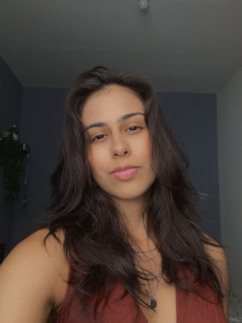

Olá, eu sou a Clara Castelo Branco
Sou formanda em Ciência da Computação, atualmente no oitavo período. Trabalho como desenvolvedora júnior na Globo. Apesar de fazer algo completamente contrário, sempre fui muito ligada na música. Sempre foi algo muito importante pra mim e fez parte de momentos importantes da minha vida. Gosto de não só escutar música, mas de ouvir, sabe? Prestar atenção nas letras, batidas, melodias e na mensagem que o artista quis passar. Por isso resolvi fazer esse blog e falar um pouco dos meus favoritos.
Artistas favoritos
- The 1975
- Mac Miller
- Charlie Brown Jr
- Lady Gaga
O que estou ouvindo agora
Eu tô vivendo um momento de música nacional, então tô sempre procurando álbuns e músicas novas de artistas brasileiros. Atualmente tenho escutado muito "O mundo dá voltas" do BaianaSystem, "Dominguinho" do João Gomes e uma playlist nacional que eu mesma montei no spotify. Mas uma banda que eu nunca paro de ouvir é a The1975, minha favorita. Esses dias tenho estado muito na vibe do disco "Notes On A Conditional Form".
Recomendações
Álbuns que eu recomendo para qualquer pessoa, independente do gosto musical:
- Being Funny In A Foreign Language The1975
- Swimming Mac Miller
- O Mundo dá Voltas BaianaSystem